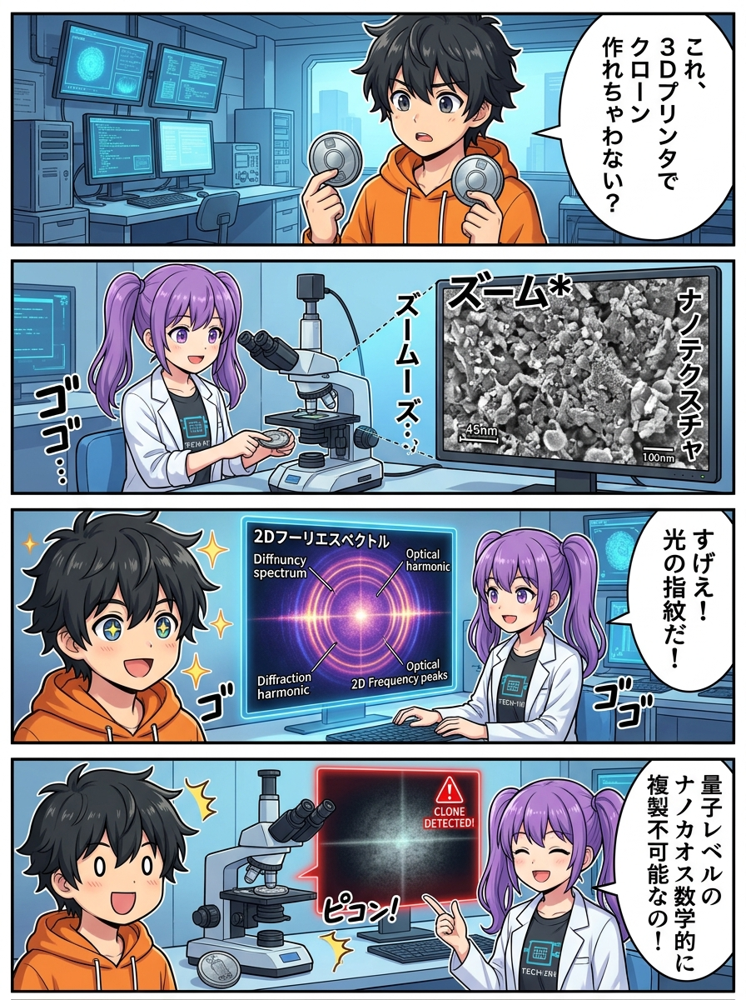
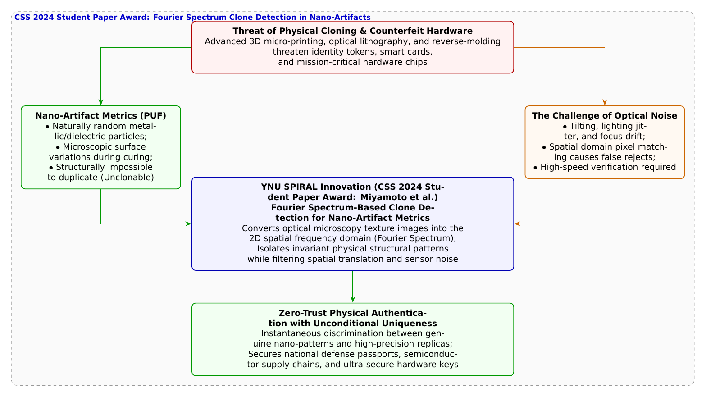

🎨 4コマ漫画挿絵（文字なし）
AI高解像度生成
▲ 【挿絵】青葉台高校 情報科学部＆帝都科学大学サイバーディフェンス・ラボでの実践シーン
💬 4コマ漫画キャラクターセリフ (Story Dialogue Script)
日・英バイリンガル (JA / EN)[葵]「えっ、チップの中身も丸ごとコピーできる偽物が作れちゃうの！？」
[Aoi] "Wait, can counterfeiters really clone the entire physical hardware chip!?"
[蓮]「でもカメラで撮影するとき、光の加減や角度が1ミリずれただけで画像が一致しなくなるよ……！」
[Ren] "True, but slight tilts or lighting jitters during microscope scans cause spatial matching to fail...!"
[葵]「わっ！ ぐちゃぐちゃだった粒子画像が、綺麗な幾何学の光の輪に変換されて一致した！」
[Aoi] "Whoa! Chaotic micro-particle noise transformed into crystal-clear geometric rings of light matching perfectly!"
[結衣]「デジタルの極致は、物質そのものが宿す奇跡の数理と繋がっているのですね！」
[Yui] "The pinnacle of digital defense converges with the wondrous physics of the material world!"
📖 小説本文
冬晴れの陽光が差し込む青葉台高校の情報科学部室。中央の作業机には、大学の研究室から特別に持ち込まれた高倍率のデジタル金属顕微鏡が設置されていた。
「……信じられないな。肉眼ではただの黒い樹脂に見えるICチップの表面に、こんな世界が広がっていたなんて」
神崎蓮が顕微鏡のモニターを覗き込みながら感嘆の声を漏らす。画面には、特殊な樹脂塗料の中にランダムに混入されたナノメートルサイズの金属微粒子が、まるで満天の星空のように散りばめられていた。
「わあ、すっごく綺麗！ まるで銀河の写真みたい！」橘葵が身を乗り出す。「蓮くん、これは何の研究なの？」
「『偽造品（ハードウェアクローン）』を物理的に完全撲滅するための研究だよ、葵先輩」
蓮が真剣な表情で説明を始めた。
「現代の軍事システム、医療機器、パスポート、そして暗号通貨のハードウェアウォレットでは、偽のチップ（海賊版）が混入するサプライチェーン汚染が深刻な脅威になっている。攻撃者は最新の電子ビーム描画装置や超精密ナノ3Dプリンターを使って、本物と全く同じ回路パターンや外見を持つクローンチップを物理的に複製してしまうんだ」
「ええっ！？ 回路も外見も寸分違わずコピーされたら、本物か偽物かなんて見分ける方法がないじゃない！」葵が青ざめる。
白石結衣が、愛用の数理ノートを開きながら静かに口を開いた。
「いいえ葵先輩、神ならぬ人間に、絶対に再現できない領域があります。それが**『ナノ人工物メトリクス（Nano-Artifact Metrics / PUF）』**です」
「人工物メトリクス……？」
「はい。樹脂が硬化する際の熱対流や、ナノ粒子の無作為なブラウン運動によって生じる超微細な凹凸や粒子配置は、完全な物理的ランダムネス（カオス）です。それは製品を作った製造メーカー自身であっても、二度と同じものを再現することは熱力学的に不可能です。すなわち、そのチップだけが持つ『世界で唯一無二の物質の指紋』になるのです」
「なるほど！ その星空みたいな粒子の写真を撮って登録しておけば、偽物を一発で見破れるんだね！」葵が手を叩く。
しかし、蓮が首を横に振った。
「それが、そう簡単にはいかないんだよ。本物か偽物かを判定するとき、顕微鏡の焦点がほんの数マイクロメートルずれたり、照射するLEDの角度が1度傾いたり、手ブレしただけで、撮影される画像のピクセル値はガラリと変わってしまう。画像比較アルゴリズム（テンプレートマッチング）を使うと、本物なのに『一致度40%・偽物』と判定されてしまう誤不一致（False Reject）が多発するんだ」
「物理のランダム性は偉大だが、それを読み取る現場の光学ノイズにどう打ち勝つか――これこそが長年の難問だったんだよ」
背後から、温かい声が響いた。城崎悠真が誇らしげな笑みを浮かべて部室に入ってきた。
「その長年の壁を、美しい数学の力で打ち破ったのが、横浜国立大学SPIRALの**宮本岩麒氏、吉田直樹氏、吉岡克成教授、そして人工物メトリクスの世界的権威である松本勉名誉教授ら**の研究チームなんだ。CSS 2024において**『ナノ人工物メトリクスにおけるフーリエスペクトルに基づくクローン検知』**を発表し、見事**学生論文賞**を受賞したんだよ」
「フーリエ……！ あの数学のフーリエ変換ですか！？」結衣が瞳を輝かせる。
「そうだ」悠真はプロジェクターに数式とスペクトル画像を映し出した。
「研究チームは、撮影したナノ粒子の光学顕微鏡画像を、**『2次元高速フーリエ変換（2D-FFT）』**によって空間周波数領域へと写像したんだ。画像の座標（位置）で比較するのではなく、画像の周期性やパターン全体のエネルギー分布（フーリエスペクトル）を抽出する。すると、撮影時の位置ズレや微小な傾き、照明ムラといった現場の光学ノイズが数学的に相殺され、物質の真の幾何学的骨格だけが鮮明に浮かび上がるんだ」
蓮が実験用PCにフーリエスペクトル解析プログラムをロードし、顕微鏡カメラの映像をリアルタイム変換した。
画面上で、乱雑だった粒子の星空が一瞬にして同心円状の美しい干渉縞（スペクトルリング）へと変換される。わざと顕微鏡を揺らし、光の角度を変えても、その中心にあるスペクトルの特徴パターンはビクともせず、本物である確率「99.98%」を叩き出した。
「すごい……！ ピクセルを見るんじゃなくて、光の周波数の調和を見ているんだ……！」葵が息を呑む。
「さらに」と悠真が力説した。「この手法は、悪意ある攻撃者が顕微鏡写真の偽造パターンを印刷して貼り付けたような『高精度のクローン偽造品』であっても、立体的な微粒子の周波数散乱特性から瞬時にニセモノと見破ることができるんだ」
蓮が大切そうに、認証をパスした小さなセキュリティチップを手のひらに乗せた。
「目に見えないデジタルの暗号と、物質そのものが宿す奇跡のナノパターンが、数学の架け橋で一つになった……。これこそ、どんな量子コンピュータでも破れない究極の鍵だね」
「ええ。記念すべき第50話にふさわしい、サイバーとフィジカルが融合した壮大な知の地平線ですね」
結衣の微笑みに、葵も悠真も深く頷き合った。夕暮れの光の中で、顕微鏡のレンズが捉えた小さな小宇宙は、未来の世界を静かに守る揺るぎない確信に満ちて輝いていた。
---
📊 セキュリティ構造図解 (TikZ LuaLaTeX生成)
国家安全基準・工学図解
▲ 【技術構造図】IPAデジタルスキル標準・国際規格に準拠した仕組みのモデル化